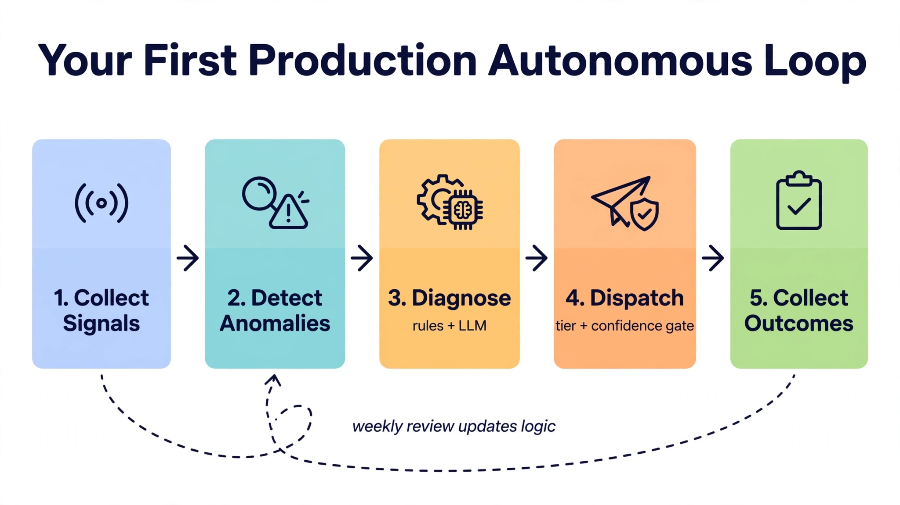

Chapter 40: Becoming an Autonomous Database Engineer (ADE)
The thirty-nine chapters before this one were about systems — how to instrument them, how to automate them, how to teach them to reason and act without human intervention. This final chapter is about you. The Autonomous Database Engineer is not a job title that exists on most org charts yet, but the role is real, the demand is accelerating, and the engineers who will define the next decade of data infrastructure are the ones who understand how to build systems that operate autonomously while also understanding precisely when and how to override them. This chapter closes the loop: from the mental model of the ADE, through the career architecture, the technical competencies, the organizational patterns, and the day-to-day practices that separate engineers who maintain databases from engineers who design self-governing data infrastructure.
The Mental Model Shift: From Operator to Architect of Autonomous Systems
Every senior DBA knows the trap. You are the person who fixes the problem. The alert fires at 2 AM, you SSH in, you identify the blocker, you kill the query, you add the index, you bump the connection pool limit. You are indispensable — and that indispensability is the problem. A system that requires you is a system that has not been fully engineered.
The ADE mental model inverts this. Your job is not to fix the system — your job is to build the system that fixes itself, and to reserve your judgment for the decisions that genuinely require human reasoning: ethical tradeoffs, cost authorization above defined thresholds, architectural pivots, and post-incident learning that improves the autonomous loop itself.
This requires accepting a specific kind of discomfort. Autonomous systems will make decisions you would not have made. They will choose to scale horizontally when you might have tuned a query. They will trigger a failover at 3 AM based on a health score crossing a threshold when you might have waited five more minutes to see if the spike was transient. Some of those decisions will be wrong. The engineering discipline of the ADE is not to prevent all autonomous errors — it is to bound their blast radius, instrument every decision with enough observability to conduct a post-action review, and continuously improve the decision logic based on observed outcomes.
The framework for this mental model has three axes:
Confidence bounds: every autonomous action has a confidence score, a risk classification, and an authorized scope. A system that can rebuild indexes aggressively but cannot drop a table without human sign-off has correctly bounded its authority.
Reversibility tiers: actions are classified by reversibility. Scaling a connection pool is reversible in seconds. Promoting a replica is reversible in minutes with effort. Dropping a partition is not reversible without a restore. The autonomous system should have nearly unlimited authority over Tier 1 reversible actions, conditional authority over Tier 2, and strict human approval gates for Tier 3.
Observability contracts: every autonomous action must emit a structured audit event that captures the triggering signal, the decision logic, the confidence score, the action taken, and the observed outcome. Without this, post-incident learning is impossible.
This mental model is not philosophy. It translates directly into code:
# Autonomous action dispatcher with confidence and reversibility enforcement
import logging
from dataclasses import dataclass
from enum import Enum
from typing import Callable, Optional
import requests
class ReversibilityTier(Enum):
TIER_1_IMMEDIATE = 1 # Seconds to reverse: pool tuning, maintenance settings
TIER_2_RECOVERABLE = 2 # Minutes to reverse: failover, replica promotion
TIER_3_DESTRUCTIVE = 3 # Requires restore: partition drops, schema changes
@dataclass
class AutonomousAction:
name: str
tier: ReversibilityTier
confidence_threshold: float
action_fn: Callable
approval_webhook: Optional[str] = None
class AutonomousDispatcher:
def __init__(self, audit_log_path: str, approval_endpoint: str):
self.audit_log_path = audit_log_path
self.approval_endpoint = approval_endpoint
self.logger = logging.getLogger("ade.dispatcher")
def dispatch(self, action: AutonomousAction, confidence: float,
context: dict) -> dict:
audit_event = {
"action": action.name,
"tier": action.tier.name,
"confidence": confidence,
"threshold": action.confidence_threshold,
"context": context,
"outcome": None,
"status": None,
}
if confidence < action.confidence_threshold:
audit_event["status"] = "SKIPPED_LOW_CONFIDENCE"
self._write_audit(audit_event)
return audit_event
if action.tier == ReversibilityTier.TIER_3_DESTRUCTIVE:
audit_event["status"] = "PENDING_HUMAN_APPROVAL"
self._request_approval(action, confidence, context)
self._write_audit(audit_event)
return audit_event
if (action.tier == ReversibilityTier.TIER_2_RECOVERABLE
and confidence < 0.90):
audit_event["status"] = "PENDING_HUMAN_APPROVAL"
self._request_approval(action, confidence, context)
self._write_audit(audit_event)
return audit_event
try:
outcome = action.action_fn(context)
audit_event["status"] = "EXECUTED"
audit_event["outcome"] = outcome
except Exception as e:
audit_event["status"] = "FAILED"
audit_event["outcome"] = str(e)
self.logger.error(f"Action {action.name} failed: {e}")
self._write_audit(audit_event)
return audit_event
def _write_audit(self, event: dict):
import json, time
event["timestamp"] = time.time()
with open(self.audit_log_path, "a") as f:
f.write(json.dumps(event) + "\n")
def _request_approval(self, action: AutonomousAction,
confidence: float, context: dict):
payload = {
"action": action.name,
"confidence": confidence,
"context": context,
"tier": action.tier.name,
}
try:
requests.post(self.approval_endpoint, json=payload, timeout=5)
except Exception as e:
self.logger.warning(f"Approval webhook failed: {e}")This dispatcher is built for SQL Server throughout. It enforces the ADE contract universally: every action is audited, every action is bounded, and the boundary logic is explicit in code rather than implicit in human judgment exercised under pressure.
The ADE Technical Stack: What You Must Own End-to-End
An ADE does not specialize in one layer. The person who only knows query tuning cannot build an autonomous system — they can build an automated query tuner, which is a component, not a system. End-to-end ownership means understanding, designing, and operating across six technical domains simultaneously.
Domain 1: Database Internals
You cannot write a self-tuning system for a database you do not understand at the storage engine level. For SQL Server, this means the lock manager and isolation internals, the Query Store plan forcing mechanism, the Always On redo thread, the buffer pool and checkpoint architecture, statistics maintenance, and the Resource Governor framework.
The ADE-level health signal extraction looks like this:
-- ADE health signal: fragmentation, statistics staleness, and AG replica lag
WITH index_health AS (
SELECT
OBJECT_SCHEMA_NAME(i.object_id) AS schema_name,
OBJECT_NAME(i.object_id) AS table_name,
i.name AS index_name,
s.avg_fragmentation_in_percent,
s.page_count,
STATS_DATE(i.object_id, i.index_id) AS stats_last_updated,
DATEDIFF(HOUR, STATS_DATE(i.object_id, i.index_id), GETDATE())
AS hours_since_stats_update,
us.user_seeks + us.user_scans + us.user_lookups AS total_reads,
us.user_updates AS total_writes
FROM sys.indexes i
INNER JOIN sys.dm_db_index_physical_stats(
DB_ID(), NULL, NULL, NULL, 'LIMITED') s
ON i.object_id = s.object_id AND i.index_id = s.index_id
LEFT JOIN sys.dm_db_index_usage_stats us
ON i.object_id = us.object_id
AND i.index_id = us.index_id
AND us.database_id = DB_ID()
WHERE s.page_count > 1000
),
ag_health AS (
SELECT
ag.name AS ag_name,
ar.replica_server_name,
drs.database_name,
drs.synchronization_state_desc,
drs.synchronization_health_desc,
drs.redo_queue_size,
drs.log_send_queue_size,
CASE
WHEN drs.redo_queue_size > 102400 THEN 'LAG_WARNING'
WHEN drs.synchronization_health_desc != 'HEALTHY' THEN 'SYNC_DEGRADED'
ELSE 'HEALTHY'
END AS ag_signal
FROM sys.dm_hadr_database_replica_states drs
INNER JOIN sys.availability_replicas ar
ON drs.replica_id = ar.replica_id
INNER JOIN sys.availability_groups ag
ON ar.group_id = ag.group_id
)
SELECT
'INDEX_HEALTH' AS signal_type,
ih.table_name,
ih.index_name,
ih.avg_fragmentation_in_percent AS fragmentation_pct,
ih.hours_since_stats_update,
CASE
WHEN ih.avg_fragmentation_in_percent > 30 THEN 'REBUILD'
WHEN ih.avg_fragmentation_in_percent > 10 THEN 'REORGANIZE'
ELSE 'HEALTHY'
END AS recommended_action
FROM index_health ih
WHERE ih.avg_fragmentation_in_percent > 10
ORDER BY ih.avg_fragmentation_in_percent DESC;Domain 2: Infrastructure as Code and Kubernetes Operators
An ADE must own the database lifecycle through Terraform and Kubernetes. The SQL Server Kubernetes operator and Azure Arc-enabled SQL Server are production tools, not experiments. You should be able to write a Kubernetes operator extension that responds to custom metrics and modifies database configuration without touching a deployment manifest manually.
Domain 3: Observability Engineering
Prometheus, Alertmanager, Grafana, and OpenTelemetry are the nervous system of autonomous database infrastructure. The ADE must understand not just how to instrument but how to build alerting logic that is specific enough to trigger autonomous actions without producing false positives that degrade trust in the automation.
The signal-to-noise ratio of your alerting stack determines whether your autonomous system makes decisions based on reality or based on instrumentation artifacts. Every Prometheus alert rule that feeds an autonomous action should have a documented false-positive rate measured over at least thirty days of production traffic.
Domain 4: Decision Engine and AI Integration
This was the subject of Book 2, but at the ADE level you are not consuming AI — you are designing the reasoning layer. The difference between an AI-assisted DBA and an ADE is that the ADE defines the epistemics: what the system believes, how confident it is, what evidence updates that confidence, and what actions are authorized at each confidence tier.
Domain 5: Multi-Region and Disaster Recovery Architecture
Autonomous systems that cannot survive a regional failure are not autonomous — they are automated in normal conditions. The ADE must understand active-active replication topologies, conflict resolution strategies, and the specific failure modes of SQL Server Always On Availability Groups and failover clusters under real network partition conditions.
Domain 6: Security and Compliance Automation
Autonomous systems that act without audit trails are a compliance liability. The ADE must own the security model of the autonomous loop itself: service account permissions, credential rotation, audit log integrity, and the authorization controls that prevent the autonomous system from being used as a privilege escalation vector.
Building Your First Production-Grade Autonomous Loop
The canonical ADE project — the one that proves the competency and forms the portfolio centerpiece — is a complete autonomous operational loop covering a production database cluster. This is not a monitoring dashboard. It is a system that observes, diagnoses, decides, acts, and learns from the outcome.
The loop has five stages:
Stage 1: Signal Collection — Metrics scraped by the SQL Server Prometheus exporter, supplemented by custom queries registered as metrics using the exporter\u2019s collector configuration. These feed into Prometheus with appropriate retention and downsampling.
Stage 2: Anomaly Detection — A Python process or a Prometheus recording rule computes rolling baseline statistics. When current_value deviates from the rolling mean by more than N standard deviations, or when a threshold-based rule fires, a candidate event is generated.
Stage 3: Diagnosis — The candidate event is enriched with additional database state: active queries, lock chains, replication lag, recent schema changes, deployment events from the change management system. This enriched context is either passed to a rule engine or submitted to an LLM API for reasoning.
Stage 4: Dispatch — The dispatcher (illustrated earlier) determines the reversibility tier, checks confidence against threshold, and either executes the action, queues it for human approval, or discards it with an audit record.
Stage 5: Outcome Collection — Post-action, the system re-evaluates the triggering signal. Did the action resolve the condition? This outcome is logged and fed into a weekly review process where the decision logic is updated.

The canonical loop in five stages, read left to right: collect signals, detect anomalies, diagnose with rules plus an LLM, dispatch through the tier-and-confidence gate, and collect outcomes. The dashed arrow is the whole point — weekly review of outcomes updates the detection and decision logic, so the loop gets smarter every cycle. Start with one narrowly scoped loop before composing many.
The following example implements Stage 3 for connection exhaustion detection — one of the highest-value autonomous interventions in production:
# Stage 3: Autonomous diagnosis for connection exhaustion
import pyodbc
import anthropic
import json
from typing import Tuple
def diagnose_connection_exhaustion(conn_string: str,
current_connections: int,
user_connections: int) -> Tuple[str, float]:
conn = pyodbc.connect(conn_string)
cur = conn.cursor()
cur.execute("""
SELECT
program_name,
status,
COUNT(*) AS session_count,
SUM(CASE WHEN open_transaction_count > 0 THEN 1 ELSE 0 END)
AS open_txn_count,
MAX(DATEDIFF(SECOND, last_request_start_time, GETDATE()))
AS max_idle_sec
FROM sys.dm_exec_sessions
WHERE is_user_process = 1
GROUP BY program_name, status
ORDER BY session_count DESC;
""")
session_breakdown = cur.fetchall()
cur.execute("""
SELECT COUNT(*)
FROM sys.dm_exec_sessions s
WHERE s.open_transaction_count > 0
AND s.status = 'sleeping'
AND DATEDIFF(SECOND, s.last_request_start_time, GETDATE()) > 60;
""")
sleeping_txn_count = cur.fetchone()[0]
cur.close()
conn.close()
utilization = current_connections / user_connections
if sleeping_txn_count > user_connections * 0.25:
return ("KILL_SLEEPING_TRANSACTIONS", 0.90)
if utilization > 0.95:
return ("SCALE_CONNECTION_POOL", 0.87)
return ("ESCALATE_TO_HUMAN", 0.60)This pattern — rule-based fast path for high-confidence known situations, LLM-assisted reasoning for novel patterns — is the production-grade architecture for autonomous database diagnosis. The rule-based layer is fast and auditable. The LLM layer handles the long tail of situations that rules cannot anticipate. Both layers output to the same dispatcher interface.
The ADE Career Architecture: Skills Map, Team Position, and Organizational Leverage
The ADE is a new kind of role, which means it does not yet have a canonical job ladder. Understanding how to position the role, how to build the competency profile, and how to generate organizational leverage is as important as the technical skills themselves.
The Skills Triad
The ADE sits at the intersection of three competency domains that are rarely combined in a single engineer:
Database Engineering Depth — Not broad familiarity. Deep knowledge of internals for at least two database engines, including storage-level behavior under failure conditions, replication mechanics, and the performance characteristics of operations at scale.
Platform Engineering Breadth — Kubernetes, infrastructure as code, CI/CD pipeline design, observability stack operation, and cloud provider primitives across at least one major provider (Azure SQL, AWS RDS for SQL Server, GCP Cloud SQL for SQL Server).
Automation and AI Systems Design — The ability to design, implement, and operate feedback loops: signal collection, anomaly detection, decision logic, action dispatch, and outcome measurement. This includes prompt engineering for LLM-assisted diagnosis, but also the classical control theory concepts (feedback loops, stability, overshoot, dampening) that apply directly to autonomous database control systems.
Most senior DBAs have the first domain deeply. Many platform engineers have the second. Almost no one entering 2024 has all three at production depth. That gap is the career opportunity.
Building Organizational Leverage
An ADE generates leverage in three ways that a traditional DBA does not:
Force multiplication: An autonomous system designed by one ADE can operate ten database clusters with the same reliability that previously required five DBAs. This is not an argument for headcount reduction — it is an argument for redeploying skilled engineering time toward higher-value architectural work.
Knowledge codification: The decision logic in an autonomous system is institutional knowledge made executable. When a senior DBA leaves, the heuristics in their head leave with them. When an ADE builds a decision engine, those heuristics are version-controlled, testable, and improvable.
Incident elimination: The value proposition of an autonomous system is measured not in incidents resolved but in incidents that never happen. This is difficult to quantify but critical to communicate. Maintain a log of autonomous interventions with the estimated human-hours that would have been required, the estimated impact to SLA if the action had been delayed, and the actual outcome. This is your quarterly business review artifact.
Team Positioning
The ADE role most naturally sits in one of three organizational structures:
Platform Engineering Team — The ADE is embedded in a platform team that owns developer experience and internal infrastructure. The database autonomous systems are one component of a broader internal developer platform.
Database Reliability Engineering — A dedicated DRE team, analogous to SRE but specialized for data infrastructure. This structure works well in organizations where database complexity and scale justify a dedicated function, and where the ADE can influence not just operations but schema design, query patterns, and application-level data access practices.
Embedded in Product Engineering — Less common, but effective in organizations where data infrastructure is a core product differentiator. The ADE works directly with the product engineering teams, designing autonomous systems that are specific to the data access patterns and reliability requirements of individual services.
Regardless of structure, the ADE must have a documented escalation path to engineering leadership for actions above the Tier 2 threshold. An autonomous system without organizational backing for its decisions is not autonomous — it is a liability.
Day-to-Day Practices of the Autonomous Database Engineer
The ADE's calendar looks different from a traditional DBA's calendar. The reactive work — the 2 AM pages, the emergency index additions, the manual failover drills — is mostly handled by the autonomous systems. The ADE's time is distributed across four categories of deliberate work.
Practice 1: The Weekly Autonomous System Review
Every autonomous action from the prior week is reviewed in a structured session. The review answers four questions:
1. Were there actions the system took that a human would not have taken? If so, was the outcome still acceptable, or should the decision logic be constrained?
2. Were there incidents that required human intervention that the system should have caught? What signal was missing or what decision rule was absent?
3. What is the false-positive rate of each Prometheus alert rule that feeds the autonomous loop? Is it trending up or down?
4. Are the confidence thresholds calibrated? High confidence that turned out wrong is a calibration failure. Low confidence that turned out trivially correct means the threshold is too conservative.
This review should produce at minimum one concrete improvement to the autonomous loop per week: a tightened alert threshold, a new rule-based fast path, a revised LLM prompt, or a new reversibility tier classification.
Practice 2: Chaos Engineering on the Autonomous Loop
The autonomous system must be tested under failure conditions. This is not optional. A system that has never been tested for the scenario it is supposed to handle autonomously is not an autonomous system — it is a hope.
The ADE should maintain a chaos test suite that injects the following conditions on a scheduled basis in a staging environment:
# Chaos test suite for autonomous database infrastructure
import random
import time
import pyodbc
import subprocess
from typing import List, Callable
class ChaosTest:
def __init__(self, name: str, inject_fn: Callable,
expected_autonomous_action: str,
timeout_seconds: int):
self.name = name
self.inject_fn = inject_fn
self.expected_autonomous_action = expected_autonomous_action
self.timeout_seconds = timeout_seconds
def inject_connection_flood(conn_string: str, count: int = 80):
"""Hold idle connections to trigger pool exhaustion detection."""
connections = []
try:
for _ in range(count):
c = pyodbc.connect(conn_string)
connections.append(c)
time.sleep(0.05)
time.sleep(30) # Hold for 30 seconds
finally:
for c in connections:
try:
c.close()
except Exception:
pass
def inject_long_running_transaction(conn_string: str):
"""Open a transaction and hold it for 90 seconds without committing."""
conn = pyodbc.connect(conn_string, autocommit=False)
cur = conn.cursor()
cur.execute("WAITFOR DELAY '00:01:30';")
# Deliberately not committing — chaos test
def inject_index_fragmentation(conn_string: str, table: str):
"""Run repeated updates to generate index fragmentation."""
conn = pyodbc.connect(conn_string, autocommit=True)
cur = conn.cursor()
for _ in range(10000):
cur.execute(f"UPDATE {table} SET updated_at = SYSUTCDATETIME() "
f"WHERE id = ?", (random.randint(1, 1000),))
def inject_replica_lag(replica_server: str):
"""Suspend data movement to a secondary to simulate redo lag."""
subprocess.run(
["sqlcmd", "-S", replica_server, "-Q",
"ALTER DATABASE [ShopDB] SET HADR SUSPEND;"],
check=True
)
class ChaosRunner:
def __init__(self, audit_log: str):
self.audit_log = audit_log
def run_test(self, test: ChaosTest, conn_string: str) -> dict:
import threading, json, time
result = {
"test_name": test.name,
"expected_action": test.expected_autonomous_action,
"observed_action": None,
"passed": False,
"elapsed_seconds": None,
}
start = time.time()
# Inject failure in a background thread
thread = threading.Thread(
target=test.inject_fn, args=(conn_string,), daemon=True
)
thread.start()
# Poll the audit log for the expected autonomous action
deadline = start + test.timeout_seconds
while time.time() < deadline:
time.sleep(2)
with open(self.audit_log) as f:
lines = f.readlines()
for line in reversed(lines):
event = json.loads(line)
if (event.get("action") == test.expected_autonomous_action
and event.get("timestamp", 0) > start):
result["observed_action"] = event["action"]
result["passed"] = True
result["elapsed_seconds"] = round(
time.time() - start, 1
)
break
if result["passed"]:
break
if not result["passed"]:
result["elapsed_seconds"] = test.timeout_seconds
result["observed_action"] = "NOT_DETECTED"
return resultThe chaos test suite should be run weekly in staging and monthly in a controlled production maintenance window. Any test that does not pass within the expected timeout is a gap in the autonomous loop that requires a sprint item.
Practice 3: Decision Logic Version Control
Every change to the autonomous system's decision logic — alert thresholds, confidence cutoffs, reversibility tier assignments, LLM prompt text — must be committed to version control with a commit message that explains the rationale. This is not bureaucracy. It is the only way to conduct a root cause analysis when an autonomous action causes harm.
The commit history of your decision logic IS the audit trail for your autonomous system's behavior. Treat it accordingly. Use a dedicated repository or subdirectory with protected branch rules, required peer review, and a changelog format that captures the before and after state of every threshold change.
Practice 4: Stakeholder Communication Without Dashboards
The ADE must be able to communicate the value and the risk of the autonomous systems to non-technical stakeholders without defaulting to a dashboard tour. The most effective format is a monthly one-page summary with four sections:
This document builds organizational trust in the system over time. It also creates accountability: when the loop fails to handle something it should have handled, the stakeholders who read that document understand that the ADE takes that gap seriously and has a plan.
The Ethics and Limits of Autonomous Database Systems
No treatment of the ADE role is complete without an honest discussion of where autonomous systems should not be allowed to act without human oversight, and why.
The consent problem: Autonomous systems make decisions that affect users. An autonomous failover changes the connection endpoint for every application connected to the database. An autonomous query termination ends a transaction that a user initiated. The humans affected by these decisions did not authorize the autonomous system to make them — they authorized a database to store their data. The ADE has an obligation to ensure that the scope of autonomous authority is commensurate with what the business has actually authorized, not merely what the technical system is capable of.
The opacity problem: LLM-assisted diagnosis introduces a reasoning layer that is not fully auditable. The LLM produces a recommendation with a stated confidence, but the internal computation that produced that recommendation is not inspectable in the way a deterministic rule is. This means LLM-assisted actions require stronger post-hoc review, not weaker. The ADE should track the correlation between LLM confidence scores and actual outcome quality, and should reduce the authority of the LLM reasoning layer if that correlation degrades.
The automation bias problem: Organizations that deploy autonomous database systems sometimes reduce their investment in human database expertise because the system is "handling it." This is a dangerous equilibrium. Autonomous systems fail in the scenarios they were not designed for, and those scenarios are precisely the ones that require the deepest human expertise. The ADE should actively maintain and develop human expertise in parallel with the autonomous system, not as a fallback, but as the system that designs, evaluates, and improves the automation.
The regulatory boundary: In industries subject to data regulation — financial services, healthcare, anything touching personal data under GDPR or CCPA — autonomous actions that touch personal data records require explicit legal grounding. Autonomous query termination that kills a data subject access request processing job is not merely a technical incident. The ADE must work with legal and compliance teams to define the hard boundaries of autonomous authority, and those boundaries must be enforced in the dispatcher code, not documented somewhere and hoped for.
What the Next Decade Looks Like for Autonomous Database Engineering
The trajectory is clear even if the exact endpoints are not. Vector databases have already moved from experimental to production-critical for AI workloads. Retrieval-augmented generation architectures require database engineers who understand both the transactional consistency properties of the underlying store and the semantic quality properties of the vector index. This is not a specialization adjacent to what this book has covered — it is an extension of the same discipline.
The convergence of cloud-native database services and autonomous operational intelligence means that the traditional boundary between "the database" and "the database service" will continue to dissolve. An ADE working on Azure SQL Database or Azure SQL Managed Instance is already operating a system where the infrastructure layer makes autonomous decisions — storage scaling, connection routing, backup scheduling — and the ADE's autonomous layer operates above that, making application-level and workload-level decisions.
The engineers who thrive in this environment share a specific disposition: they are comfortable with systems that have agency. They can reason about what a system will do in a scenario they have not explicitly programmed. They design for failure modes they have not yet encountered. They treat observability as a first-class engineering concern, not an afterthought. And they hold both the humility to know what their autonomous systems do not know, and the confidence to build systems that act on incomplete information without requiring human approval for every decision.
That disposition, combined with the technical stack this book has described, is the Autonomous Database Engineer.
Key Takeaways
DB Hub — Self-Hosted Database Platform
9 modules · Schema browser · AI assistant · Query optimizer · SQL Server
Test yourself on this chapter
5 questions · instant scoring · explanations included